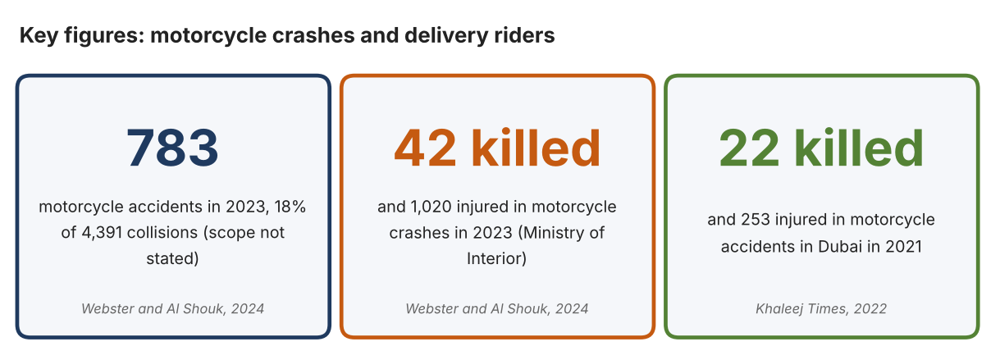
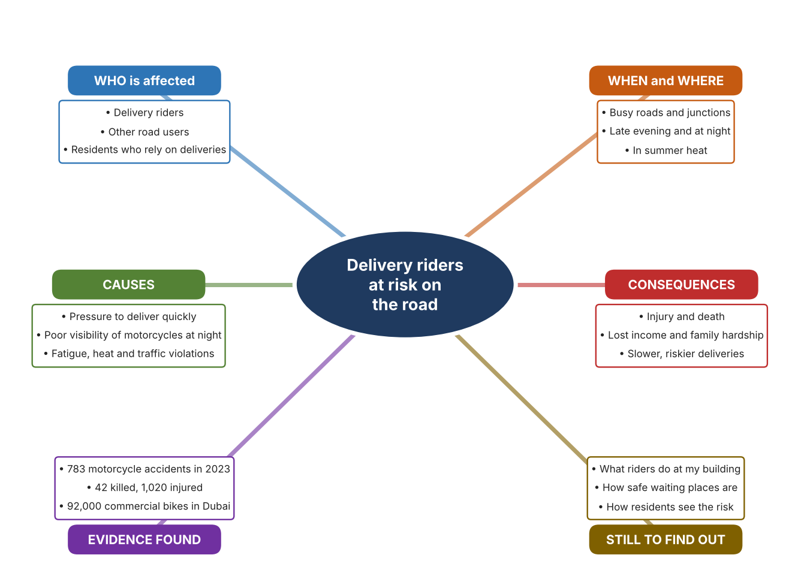
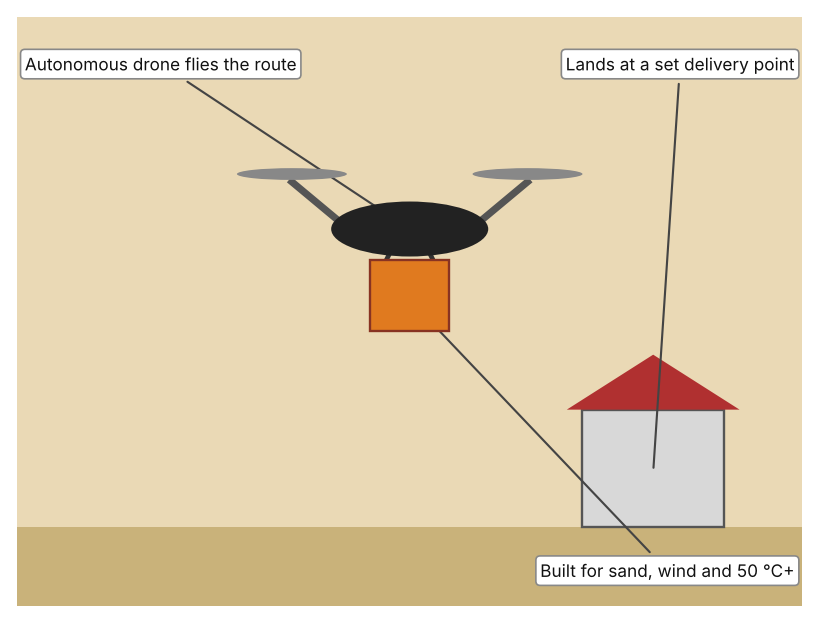
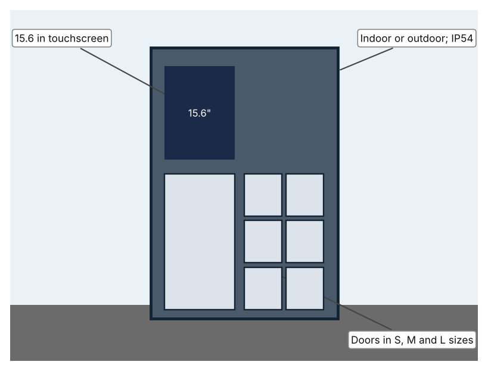
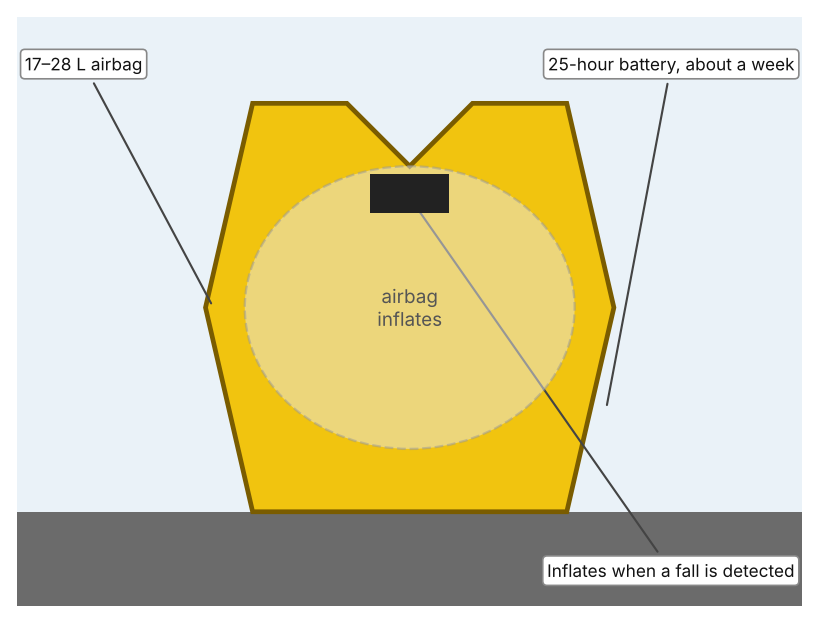

A1 · Design need
Identify and explain the problem faced by your client and community.
My client is the Community Safety Coordinator of a residential community in Dubai (a fictional client created for this task). Every day, many food and parcel deliveries arrive in the community by motorcycle, and the coordinator sees riders arriving quickly, parking on pavements and leaving in a hurry. The coordinator is concerned that the people who bring deliveries to the community are exposed to a high risk of crashes. The client needs the safety of delivery riders to be improved.
The riders are affected first, and many depend on this work to support their families. Other road users, including drivers and pedestrians, share the risk when a crash happens. The residents who order deliveries are affected because they depend on riders and may feel responsible when something goes wrong. The community as a whole is affected because crashes cause injury, loss of income, and distress.
The need is supported by evidence. A report on 2023 figures recorded 783 motorcycle accidents, which was 18% of 4,391 collisions, together with 42 deaths and 1,020 injuries involving motorcyclists, and the RTA says 92,000 commercial motorcycles were registered in Dubai (Webster and Al Shouk). The article does not state the geographic scope of the accident figures. A Khaleej Times report says that 22 people were killed and 253 injured in motorcycle accidents in Dubai in 2021 (Khaleej Times). The same article says police attributed most accidents to traffic violations committed by motorists, and The National says visibility drops around 10 pm, making small motorcycles harder to see (Webster and Al Shouk).
Figure 1 summarises the key numbers. In my own words, a motorcycle gives a rider no protection around the body, so a mistake by anyone on the road can turn into a serious injury. I still need to find out what riders face where I live, and I will use an observation checklist and a short survey, being careful to observe from a safe place and with an adult. Figure 2 is my mind map of the problem.
335 words


A2 · Research plan
Six research questions of different types, each with a priority, a research type and evidence.
| # | Question | Priority | Primary / secondary | Evidence | Brief answer |
|---|---|---|---|---|---|
| 1 | Factual: How many motorcycle crashes, deaths and injuries are reported, and how many commercial motorcycles are there? | High | Secondary | Webster and Al Shouk, The National, 2024 (Appendix A, Source 1) | 2023: 783 motorcycle accidents (18% of 4,391), 42 deaths, 1,020 injuries (scope not stated); 92,000 commercial bikes in Dubai and 124,000 in the UAE. |
| 2 | Factual: What happened in Dubai in 2021, and what did police say about the causes? | High | Secondary | Khaleej Times, 2022 (Appendix A, Source 2) | 22 killed and 253 injured in Dubai motorcycle accidents; police blamed mainly motorists' violations such as speeding, phone use, sudden swerving and tailgating. |
| 3 | Conceptual: Why is delivery riding especially risky, and how could the risk be reduced? | Medium | Secondary | Appendix A, Sources 1, 3, 4 and 5 | Riders are exposed, small motorcycles are hard to see at night, and heat, fatigue and speed add risk. The risk can be reduced by protecting the rider, by changing how deliveries reach customers, or by improving rules and training. |
| 4 | Debatable: Should rider safety be improved by protecting riders, by changing how deliveries are made, or by changing rules and training? | Medium | Secondary | Appendix A, Sources 1, 3, 4 and 5 | Protective equipment helps once a crash begins but does not prevent it; changing delivery methods removes some trips but cannot replace all; rules and training depend on compliance. My view: each addresses a different point. |
| 5 | Debatable (challenges my assumption, UAE source): Dubai offers free rider health checks and rest stations, so is rider safety still a serious problem? | High | Secondary | Webster and Al Shouk, The National, 2024 (Appendix A, Source 1) | Free health checks began in Dubai in May 2023 and 6,000 rest stations operate in the summer midday break, yet 42 deaths and 1,020 injuries were reported for 2023, so these measures have not removed the problem. |
| 6 | Factual (primary): What do riders face at a local delivery pick-up or drop-off point, and how do residents see the risk? | High | Primary | Own observation checklist and survey (Appendix A, Sources 6 and 7) | [Student data needed: write the checklist counts and survey averages (with permission), then two sentences on the pattern you see.] |
A3 · Existing products
Three significantly different products, each analysed with ACCESS FM, with pros and cons.
Product 1: Delivery drone (Keeta Drone)

Illustration by the author based on Fast Company Staff, “Keeta Drone Pushes Dubai Closer to Citywide Aerial Delivery by 2030” (Appendix A, Source 3). [Student: replace with a photo from the source, cited MLA 9]
Product 2: Parcel locker bank (Pitney Bowes Smart Lockers)

Illustration by the author based on “Locker Configurations,” Pitney Bowes (Appendix A, Source 4). [Student: replace with a photo from the source, cited MLA 9]
Product 3: Rider airbag vest (Helite E-Turtle)

Illustration by the author based on “Helite E-Turtle Electronic Inflatable Vest,” Sportsbikeshop (Appendix A, Source 5). [Student: replace with a photo from the source, cited MLA 9]
ACCESS FM analysis
| ACCESS FM | Product 1 | Product 2 | Product 3 |
|---|---|---|---|
| Aesthetics | Drone and automated ground support units; the article gives no description of looks. | Powder-coated galvanised steel units with a touchscreen. | Vest with chest and back armour; the page describes it as wireless. |
| Cost | Cost not stated. | Price on enquiry; not stated. | Price not listed; the page says the vest is discontinued. |
| Customer | Restaurants, cafés and customers on approved routes (Dubai Silicon Oasis, Nad Al Sheba). | Residents, offices and shops that want parcels collected at a set point; optional audio keypad and wheelchair-accessible design. | Motorcycle riders who wear it while riding. |
| Environment | Built for sand, wind and temperatures above 50 °C; night operation planned. | IP54; −20 to 60 °C; 240 V with battery backup; indoor or outdoor. | Battery lasts about a week (25 hours); needs replacement E-Canister cartridges. |
| Size | Fourth-generation drone; size not given. | Single column of 6 doors (3 S, 2 M, 1 L), a tower of 17, or a tower of 44 small doors; dimensions not stated. | Fits chest and waist ranges from 24 to 51 in; 17–28 L airbag. |
| Safety | Removes a rider from some trips, though it works only on approved routes. Bystander view: aircraft over homes are a new risk the article does not discuss. | Takes the parcel to a place where no rider needs to enter a building. Bystander view: a locker is a fixed object on the pavement. | Inflates in a fall or crash, and an optional fork sensor halves detection time from 31 ms. Bystander view: only protects the wearer. |
| Function | Flies a food order from a restaurant to a landing point, using an autonomous drone and ground units. | Stores parcels in locked doors; users collect with a code or card. | A sensor in the vest detects a fall or accident and inflates the airbag automatically. |
| Materials | Materials are not stated. | Powder-coated galvanised steel. | Armour and airbag fabric; materials not stated. |
Pros and cons
| Product 1 | Product 2 | Product 3 | |
|---|---|---|---|
| Pro | Takes some deliveries off the road and is built for the local climate. | Needs no rider to meet the customer and has options for accessibility. | Protects the neck, chest and back of the rider, and its battery lasts about a week. |
| Con | Limited to approved routes, no cost or payload stated, and public acceptance is untested. | Only moves the delivery point, so riders must still reach it, and price is not stated. | Only protects the wearer after something goes wrong and the model is discontinued. |
A4 · Design brief
Restate the need, summarise the research and the existing products, and state the design intent.
My client, the Community Safety Coordinator of a residential community in Dubai, needs the safety of delivery riders to be improved. A report on 2023 figures recorded 783 motorcycle accidents (18% of 4,391 collisions), 42 deaths and 1,020 injuries, and 92,000 commercial motorcycles are registered in Dubai (Appendix A, Source 1). In Dubai in 2021, 22 people were killed and 253 injured in motorcycle accidents (Appendix A, Source 2).
My research shows that riders are exposed on the road, that visibility of motorcycles falls at night, and that the police mainly blame traffic violations (Appendix A, Sources 1 and 2). My debatable questions led me to conclude that protecting riders, changing how deliveries are made, and improving rules and training each address a different point in the risk. My challenged assumption was that Dubai's free health checks and rest stations have solved the problem; the figures for 2023 show they have not. I will gather my own evidence with an observation checklist and a survey, from a safe place and with an adult (Appendix A, Sources 6 and 7).
I analysed three very different existing solutions. A delivery drone takes a food order to a landing point, but it works only on approved routes and the article gives no payload or speed (Appendix A, Source 3). A parcel locker bank lets parcels be collected at a set point, but it moves the delivery point and does not reduce the riding itself (Appendix A, Source 4). A rider airbag vest inflates in a fall, but it protects the wearer only after something goes wrong and the model is discontinued (Appendix A, Source 5). They give me three ideas for inspiration: take some trips off the road, change where deliveries end, and protect the rider.
My design intent is therefore to create a solution that improves the safety of delivery riders, by reducing the risk they face or the harm caused if something goes wrong. It must be affordable, practical for riders and residents, reliable in heat and at night, and respectful of the people who do this work. I have deliberately not fixed what form it will take. That decision will be made in Criterion B, after I analyse my own checklist and survey against the evidence in Appendix A.
379 words
Appendix A · Research notes and sources
Secondary sources in MLA 9, with notes and where each source is used.
| # | Source (MLA 9) | Key notes | Used in |
|---|---|---|---|
| 1 | Webster, Nick, and Ali Al Shouk. “Road Safety 2024: Delivery Riders Navigate Challenges as Demand for Fast Food Surges.” The National, 1 Aug. 2024, www.thenationalnews.com/news/uae/2024/08/01/road-safety-2024-delivery-riders/. Accessed 21 Oct. 2026. | 2023: 783 motorcycle accidents (18% of 4,391); 42 deaths; 1,020 injuries (scope not stated); 92,000 commercial bikes in Dubai, 124,000 in the UAE (RTA); visibility falls around 10 pm; free health checks in Dubai since May 2023; 6,000 rest stations in the summer midday break. | A1; A2 Q1, Q3, Q4 and Q5; A4. |
| 2 | “Dubai: 22 Killed, 253 Injured in Motorcycle Accidents Last Year.” Khaleej Times, 6 Mar. 2022, www.khaleejtimes.com/uae/transport/dubai-22-killed-253-injured-in-motorcycle-accidents-last-year. Accessed 21 Oct. 2026. | 2021 in Dubai: about 22 killed and 253 injured; police attributed most accidents to motorists' violations (speeding, phone use, sudden swerving, ignoring signs, tailgating). Article from 2022. | A1; A2 Q2; A4. |
| 3 | Fast Company Staff. “Keeta Drone Pushes Dubai Closer to Citywide Aerial Delivery by 2030.” Fast Company Middle East, 21 Nov. 2025, fastcompanyme.com/news/keeta-drone-pushes-dubai-closer-to-citywide-aerial-delivery-by-2030/. Accessed 21 Oct. 2026. | First Beyond Visual Line of Sight delivery licence in Dubai in late 2024; routes around Dubai Silicon Oasis and Nad Al Sheba; fourth-generation autonomous drones; built for sand, wind and over 50 °C; night operation planned; a proposal for 70% drone coverage of Dubai by 2030; no payload or speed given. | A2 Q3 and Q4; A3 Product 1; A4. |
| 4 | “Locker Configurations.” Pitney Bowes, www.pitneybowes.com/uk/smart-lockers/locker-configurations.html. Accessed 21 Oct. 2026. | Single column of 6 doors (3 S, 2 M, 1 L); tower of 17; tower of 44 small doors; powder-coated galvanised steel; IP54; −20 to 60 °C; 15.6 in Android touchscreen; 240 V with battery backup; indoor or outdoor; optional RFID reader, audio keypad and wheelchair-accessible design. | A2 Q3 and Q4; A3 Product 2; A4. |
| 5 | “Helite E-Turtle Electronic Inflatable Vest – Black.” Sportsbikeshop, www.sportsbikeshop.co.uk/motorcycle_parts/content_prod/522790. Accessed 21 Oct. 2026. | Wireless airbag vest with chest and back armour; 17–28 L airbag; 25-hour battery (about a week); sensor in the vest, optional fork sensor halves detection time from 31 ms; discontinued; price not listed. | A2 Q3 and Q4; A3 Product 3; A4. |
| 6 | Primary: observation checklist, completed by the student on [date]. Accessed own data. | [Student: summarise your counts.] | A2 primary question; A4. |
| 7 | Primary: survey of [number] people, completed on [date]. | [Student: summarise your averages.] | A2 primary question; A4. |
Primary research instrument 1: observation checklist
Student observes from a safe place with an adult, for ten minutes at a time, and records no names or number plates.
| Observation (10 min) | Helmet worn (Y/N) | Reflective clothing (Y/N) | Safe place to wait (Y/N) | Parked on pavement (Y/N) | Notes |
|---|---|---|---|---|---|
| Observation 1 | |||||
| Observation 2 | |||||
| Observation 3 | |||||
| Observation 4 |
Primary research instrument 2: survey
Rate each statement from 1 (strongly disagree) to 5 (strongly agree). Collect responses with permission and record no names.
| Statement | 1 | 2 | 3 | 4 | 5 | Total responses |
|---|---|---|---|---|---|---|
| Delivery riders at my building seem to be in a hurry. | ||||||
| There is a safe place for riders to wait near my building. | ||||||
| I notice if riders wear a helmet and bright clothing. | ||||||
| I worry about the safety of delivery riders. |